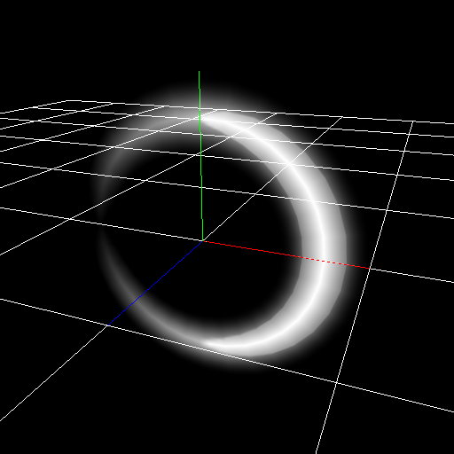
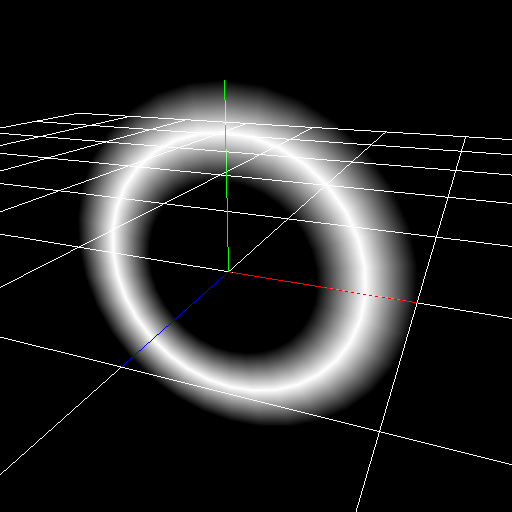
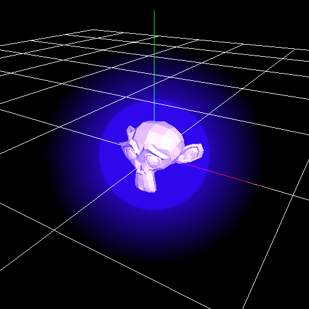
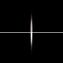

TIPS¶
It explains the parameter setting for each purpose and the operation method convenient if you know it in this chapter. It explains with the premise that You read through the tutorial, so I recommend you to read the tutorial first. Depending on the item the item is linked to other pages.
Infinite the lifetime of particles.¶
Depending on the type of effect, you may want the effect to exist until the end of the game. There are several ways to achieve it. Note that you need to stop an effect manually because the effect does not disappear until the end of the game.
Time to live¶
If Time to live is made longer than the game play time, the particles remain until the game is over.
Destroy after time¶
It is to uncheck Destroy after time in Basic Settings window.
Spawn Count¶
If Spawn Count is infinite, the whole effect will continue to exist even if each particle disappears.
Generating multiple particles at the 0th frame simultaneously.¶
Set Spawn Rate to a very small value such as 0.0001.
In addition, Initial Delay is made negative.
If Spawn Rate is less than 1, multiple particles are generated during one frame.
If Initial Delay is a minus time, particles are generated in 0 frame.
With these two, multiple particles is generated in the 0th frame.
Place particles radially¶
Place particles radially so that particles move from the center towards the outside.
parent-child relationship¶
Set the parent particles to rotate randomly in 360 degrees direction. If the child is placed away from the center, the particles are arranged radially.
Generate crescent-shaped particles¶
It generates crescent shaped particles.
Ring¶
Set the image whose parts are not connected in the ring. Then you can generate crescent shaped particles. Just rotating these with random axes will make it look nice.
|  |  |
Ensure that effects do not collide in the character when playing effects during the game¶

|
 |
Effects such as a hit effect may be placed at the same position as the character. Placing the effect and character at the same position causes the character to collide into the effect. If you shift the position of the effect with the program of the game, objects areno collied. But this method is troublesome.
Z offset¶
When Z offset is specified, the effect position is moved in the depth direction when drawing. Effect doesn't be collided in the character as effects move.
Z test¶
When Z test is turned off, effects will be drawn even if other objects are shown. However, even if there is an obstacles in front, effects are drawn. So care must be taken when there are obstacles.
Generate sword trajectory.¶
I prepared a sample because it is a bit complicated.
Use the ribbon to generate the trajectory of the sword.
Unlike the track, the ribbon maintains the generated position.
If you place the ribbon in the position where the sword passed, it looks like a sword trajectory.
The ribbon is generated as child node of the sword's node.
It is suitable to express the sword with a model, but this time I changed the sprite's Vertex Coords and placed it like a sword.
Change the the ribbon's Vertex Coords from the Render Settings panel and make the distance between the left and the right of the ribbon the same as the length of the sword.
Adjust the position and angle of the ribbon so that it aligns with the sword.
Because it is a ribbon, you change Inherit Position, Inherit Rotation and Inherit Scale into Only on create.
After that adjust the parameters such as color and fade-out of the ribbon.
When the sword move, you can see that the trajectory is displayed according to the position of the sword.
The sword changed its angle with the F-curve and moved it.
In this TIPS I move the sword with Effekseer, but it is okay to move the effect in the game according to the sword in the game.
Thin and narrow particle's image¶
When you set a square image on thin and narrow particle, the shape may be incorrect when you look from a place away from the particle.
The mipmap reduces the resolution of the image, which make a renderer refers same pixels on the edge pixel and the center pixel.
To prevent this, use a thin and narrow image for the image.
It is a particle using a square image on the left, and a particle using a thin and narrow image on the right.

|
 |
Enable Inherit Color without showing the parent.¶
Specify the render method as Sprite. In the Common panel, set Visibility On to Off.
In this way, you can enable Inherit Color while the sprite is not shown.